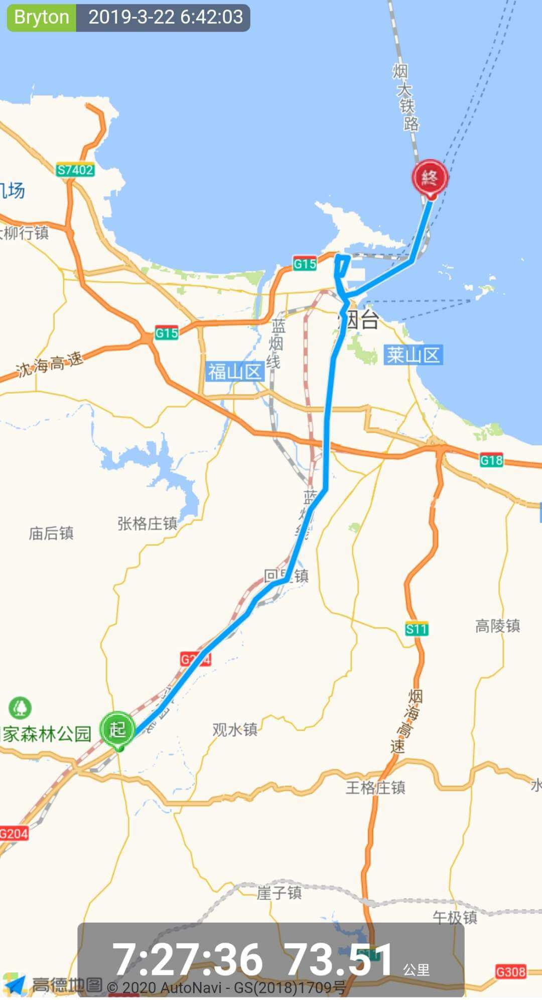
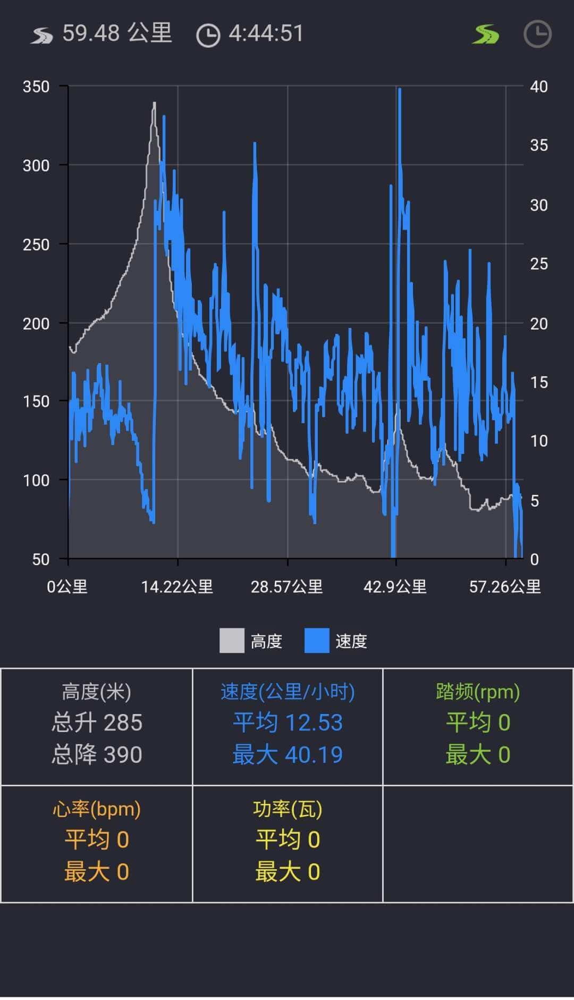
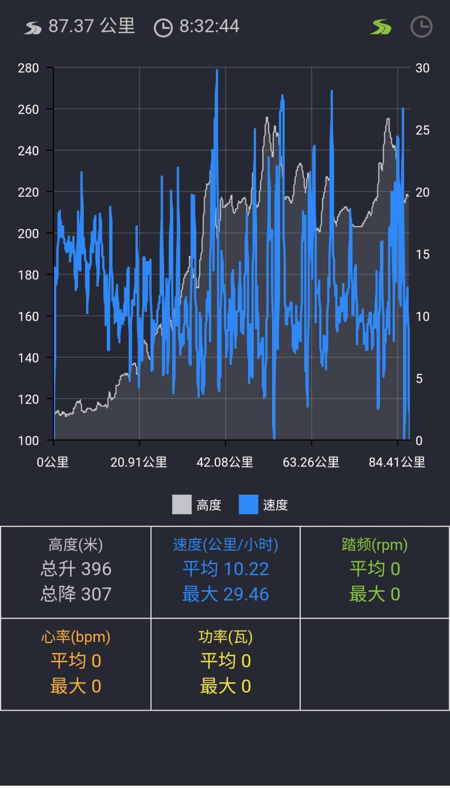
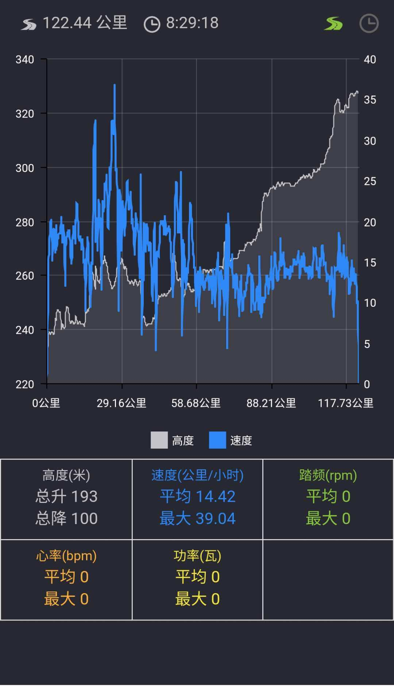

## <i class="fa fa-file-text-o"></i>&nbsp;目录（Table of Contents）
+ [I. 总路线图](#one)
+ [II. 景点](#two)
+ [III. 骑行路线（所含地区：浙江、江苏、山东、辽宁、吉林、黑龙江、内蒙古）](#three)
- [1、杭州市 - 震泽古镇](#1)
- [2、震泽古镇 - 昆承湖](#2)
- [3、昆承湖 - 南通](#3)
- [4、南通 - 通海湖公园](#4)
- [5、通海湖公园 - 大丰区](#5)
- [6、大丰区 - 白天鹅公园](#6)
- [7、白天鹅公园 - 杨集镇](#7)
- [8、杨集镇 - 和安湖生态公园](#8)
- [9、和安湖生态公园 - 海曲公园](#9)
- [10、海曲公园 - 双球公园](#10)
- [11、双球公园 - 墨河公园](#11)
- [12、墨河公园 - 交通商务宾馆](#12)
- [13、交通商务宾馆 - 广霞旅馆](#13)
- [14、广霞旅馆 - 烟台港客运站](#14)
- [15、烟台港客运站 - 炮台山公园](#15)
- [16、炮台山公园 - 中心公园](#16)
- [17、中心公园 - 青堆镇](#17)
- [18、青堆镇 - 东港市](#18)
- [19、东港市 - 佳谊宾馆](#19)
- [20、佳谊宾馆 - 凤城市体育馆](#20)
- [21、凤城市体育馆 - 草河口镇](#21)
- [22、草河口镇 - 望溪公园](#22)
- [23、望溪公园 - 高官乡](#23)
- [24、高官乡 - 万科金域国际](#24)
- [25、万科金域国际 - 人民公园](#25)
- [26、人民公园 - 南湖公园](#26)
- [27、南湖公园 - 响铃公园](#27)
- [28、响铃公园 - 朝阳公园](#28)
- [29、朝阳公园 - 龙潭公园](#29)
- [30、龙潭公园 - 镜湖公园](#30)
- [31、镜湖公园 - 兴城镇](#31)
- [32、兴城镇 - 儿童公园](#32)
- [33、儿童公园 - 鑫佰利宾馆](#33)
- [34、鑫佰利宾馆 - 鹤泉园](#34)
- [35、鹤泉园 - 幸福广场](#35)
- [36、幸福广场 - 慧源快捷宾馆](#36)
- [37、慧源快捷宾馆 - 大时尼奇](#37)
- [38、大时尼奇 - 兴安岭站](#38)
- [39、兴安岭站 - 乌奴耳镇](#39)
- [40、乌奴耳镇 - 牙克石市](#40)
- [41、牙克石市 - 凯沃宾馆](#41)
- [42、凯沃宾馆 - 沃新哈格音](#42)
- [43、沃新哈格音 - 飞马广场](#43)
- [44、飞马广场 - 七居商务宾馆](#44)
<h2 id="one"><i class="fa fa-circle-o-notch fa-spin"></i>&nbsp;总路线图</h2>
<h2 id="two"><i class="fa fa-star-o"></i>&nbsp;景点</h2>
<h2 id="three"><i class="fa fa-spinner fa-pulse"></i>&nbsp;骑行路线（所含地区：浙江、江苏、山东、辽宁、吉林、黑龙江、内蒙古）</h2>
<h4 id="1">1、杭州市 - 震泽古镇&nbsp;&nbsp;<i class="fa fa-bicycle fa-2x"></i></h4>
<h4 id="2">2、震泽古镇 - 昆承湖&nbsp;&nbsp;<i class="fa fa-bicycle fa-2x"></i></h4>
<h4 id="3">3、昆承湖 - 南通&nbsp;&nbsp;<i class="fa fa-bicycle fa-2x"></i></h4>
<h4 id="4">4、南通 - 通海湖公园&nbsp;&nbsp;<i class="fa fa-bicycle fa-2x"></i></h4>
<h4 id="5">5、通海湖公园 - 大丰区&nbsp;&nbsp;<i class="fa fa-bicycle fa-2x"></i></h4>
<h4 id="6">6、大丰区 - 白天鹅公园&nbsp;&nbsp;<i class="fa fa-bicycle fa-2x"></i></h4>
<h4 id="7">7、白天鹅公园 - 杨集镇&nbsp;&nbsp;<i class="fa fa-bicycle fa-2x"></i></h4>
<h4 id="8">8、杨集镇 - 和安湖生态公园&nbsp;&nbsp;<i class="fa fa-bicycle fa-2x"></i></h4>
<h4 id="9">9、和安湖生态公园 - 海曲公园&nbsp;&nbsp;<i class="fa fa-bicycle fa-2x"></i></h4>
<h4 id="10">10、海曲公园 - 双球公园&nbsp;&nbsp;<i class="fa fa-bicycle fa-2x"></i></h4>
<h4 id="11">11、双球公园 - 墨河公园&nbsp;&nbsp;<i class="fa fa-bicycle fa-2x"></i></h4>
<h4 id="12">12、墨河公园 - 交通商务宾馆&nbsp;&nbsp;<i class="fa fa-bicycle fa-2x"></i></h4>
<h4 id="13">13、交通商务宾馆 - 广霞旅馆&nbsp;&nbsp;<i class="fa fa-bicycle fa-2x"></i></h4>
<h4 id="14">14、广霞旅馆 - 烟台港客运站&nbsp;&nbsp;<i class="fa fa-bicycle fa-2x"></i></h4>

<h4 id="15">15、烟台港客运站 - 炮台山公园&nbsp;&nbsp;<i class="fa fa-bicycle fa-2x"></i></h4>
<h4 id="16">16、炮台山公园 - 中心公园&nbsp;&nbsp;<i class="fa fa-bicycle fa-2x"></i></h4>
<h4 id="17">17、中心公园 - 青堆镇&nbsp;&nbsp;<i class="fa fa-bicycle fa-2x"></i></h4>
<h4 id="18">18、青堆镇 - 东港市&nbsp;&nbsp;<i class="fa fa-bicycle fa-2x"></i></h4>
<h4 id="19">19、东港市 - 佳谊宾馆&nbsp;&nbsp;<i class="fa fa-bicycle fa-2x"></i></h4>
<h4 id="20">20、佳谊宾馆 - 凤城市体育馆&nbsp;&nbsp;<i class="fa fa-bicycle fa-2x"></i></h4>
<h4 id="21">21、凤城市体育馆 - 草河口镇&nbsp;&nbsp;<i class="fa fa-bicycle fa-2x"></i></h4>
<h4 id="22">22、草河口镇 - 望溪公园&nbsp;&nbsp;<i class="fa fa-bicycle fa-2x"></i></h4>
<h4 id="23">23、望溪公园 - 高官乡&nbsp;&nbsp;<i class="fa fa-bicycle fa-2x"></i></h4>

<h4 id="24">24、高官乡 - 万科金域国际&nbsp;&nbsp;<i class="fa fa-bicycle fa-2x"></i></h4>
<h4 id="25">25、万科金域国际 - 人民公园&nbsp;&nbsp;<i class="fa fa-bicycle fa-2x"></i></h4>

<h4 id="26">26、人民公园 - 南湖公园&nbsp;&nbsp;<i class="fa fa-bicycle fa-2x"></i></h4>
<h4 id="27">27、南湖公园 - 响铃公园&nbsp;&nbsp;<i class="fa fa-bicycle fa-2x"></i></h4>
<h4 id="28">28、响铃公园 - 朝阳公园&nbsp;&nbsp;<i class="fa fa-bicycle fa-2x"></i></h4>
<h4 id="29">29、朝阳公园 - 龙潭公园&nbsp;&nbsp;<i class="fa fa-bicycle fa-2x"></i></h4>
<h4 id="30">30、龙潭公园 - 镜湖公园&nbsp;&nbsp;<i class="fa fa-bicycle fa-2x"></i></h4>

<h4 id="31">31、镜湖公园 - 兴城镇&nbsp;&nbsp;<i class="fa fa-bicycle fa-2x"></i></h4>
<h4 id="32">32、兴城镇 - 儿童公园&nbsp;&nbsp;<i class="fa fa-bicycle fa-2x"></i></h4>
<h4 id="33">33、儿童公园 - 鑫佰利宾馆&nbsp;&nbsp;<i class="fa fa-bicycle fa-2x"></i></h4>
<h4 id="34">34、鑫佰利宾馆 - 鹤泉园&nbsp;&nbsp;<i class="fa fa-bicycle fa-2x"></i></h4>
<h4 id="35">35、鹤泉园 - 幸福广场&nbsp;&nbsp;<i class="fa fa-bicycle fa-2x"></i></h4>
<h4 id="36">36、幸福广场 - 慧源快捷宾馆&nbsp;&nbsp;<i class="fa fa-bicycle fa-2x"></i></h4>
<h4 id="37">37、慧源快捷宾馆 - 大时尼奇&nbsp;&nbsp;<i class="fa fa-bicycle fa-2x"></i></h4>
<h4 id="38">38、大时尼奇 - 兴安岭站&nbsp;&nbsp;<i class="fa fa-bicycle fa-2x"></i></h4>
<h4 id="39">39、兴安岭站 - 乌奴耳镇&nbsp;&nbsp;<i class="fa fa-bicycle fa-2x"></i></h4>
<h4 id="40">40、乌奴耳镇 - 牙克石市&nbsp;&nbsp;<i class="fa fa-bicycle fa-2x"></i></h4>
<h4 id="41">41、牙克石市 - 凯沃宾馆&nbsp;&nbsp;<i class="fa fa-bicycle fa-2x"></i></h4>
<img data-src="../imgs/region-bike/zhejiang/41.jpeg" width="35%" title="41、牙克石市 - 凯沃宾馆"/>
<h4 id="42">42、凯沃宾馆 - 沃新哈格音&nbsp;&nbsp;<i class="fa fa-bicycle fa-2x"></i></h4>
<h4 id="43">43、沃新哈格音 - 飞马广场&nbsp;&nbsp;<i class="fa fa-bicycle fa-2x"></i></h4>
<img data-src="../imgs/region-bike/zhejiang/43t.jpeg" width="35%" title="43、沃新哈格音 - 飞马广场"/>
<h4 id="44">44、飞马广场 - 七居商务宾馆&nbsp;&nbsp;<i class="fa fa-bicycle fa-2x"></i></h4>